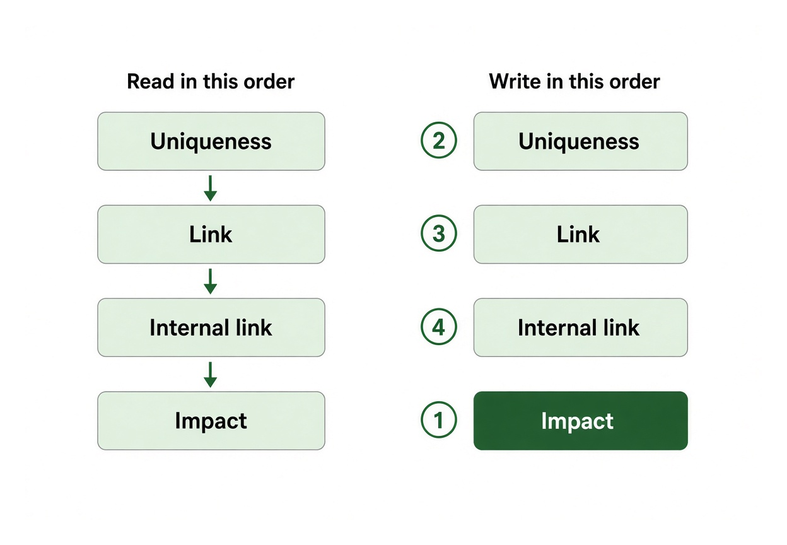

Chapter 17: Writing Advantages
In this chapter
Move: Build. Builds on: Chapters 8 and 14. Where you use it: writing the affirmative's case, and writing any argument built on the Uniqueness Model, including disadvantages.
Objectives
By the end of this chapter you should be able to:
- Write an advantage in three steps: research, start from the bottom, then build from the top down.
- Choose impacts the literature on a topic can actually reach.
- Use a brink to make uniqueness and timeframe arguments stronger.
- Pre-empt likely negative arguments when you write the case.
- Explain normal means and use it carefully.
Key terms
Advantage, impact scenario, starting from the bottom, top down, brink, threshold, pre-emption, normal means.
The idea
17.1 Three steps to an advantage
Chapter 14 taught the four parts of the Uniqueness Model, and Chapter 15 placed advantages among the stock issues. This chapter is about writing one. Students who have the structure memorized often still stare at a blank page, because they start at the top: "Uniqueness: ..." and then nothing. The fix is to write in a different order than you read. A reliable process has three steps.
Step 1: research first. Do exploratory research on the topic before you write a word (Chapter 8). Do not force an advantage you thought of before reading; let the literature tell you where the strong arguments are. A few minutes of reading will usually show you two or three impact areas the topic clearly reaches, and save you hours defending one it does not.
Step 2: start from the bottom. Once you have read, decide what impact you can reach, and write it first. This is starting from the bottom: you begin with the end of the story. A topic about increasing federal education funding suggests poverty and education impacts. A topic about military action suggests war impacts. A topic about AI development suggests impacts on jobs, safety and rights. Each possible ending is an impact scenario: a specific harm to people that the topic's literature connects to the resolution. Chapter 14's rule applies: the impact should be terminal, ending in people suffering or dying, by the shortest chain your evidence supports.
Step 3: top down. With the impact written, go back to the top and fill in the rest. Uniqueness comes next: describe the status quo in a way that sets up your impact. If the impact is poverty, the uniqueness describes people losing income now. The link is the easiest part, because it is always a description of the plan. Then write the internal link last: the explanation of how the plan changes the situation you described in uniqueness, so that the impact is prevented. Internal links are where research is hardest and where advantages are most often attacked, so this is where your best evidence should go.

17.2 Start from the bottom: an example
Return to the small example from Chapters 4 and 14: the policy resolution "Sam should get a dog."
After a little research, the obvious impact is security. So the advantage starts from the bottom:
Advantage 1: Burglars. Uniqueness: ??? Link: ??? Internal link: ??? Impact: stopping burglars from stealing Sam's DVD collection.
Then it moves to the top. Uniqueness: there have been burglaries in Sam's neighborhood. The link fills itself in: Sam gets a dog. The internal link does the real work: dogs bark at strangers, and burglars avoid homes with barking dogs. Now the advantage is complete, and the hardest part, the internal link, is also clearly the part to research most carefully.
The same process works for a federal policy. On the AI resolution, start from the impact the literature supports, such as workers falling into poverty when AI displaces them faster than they can retrain. Then write uniqueness (displacement is accelerating now and retraining programs are not keeping up), the link (the plan requires licenses before the largest AI systems are trained) and the internal link (licensing slows the deployment of the most disruptive systems, giving workers and retraining programs time to adjust).
17.3 Brinks
Some impacts happen all at once when a situation crosses a line. A brink is that line: the point at which a situation tips from manageable to catastrophic. The word appears constantly in debate evidence ("on the brink of collapse"), and used well, it strengthens two parts of an advantage.
A brink strengthens uniqueness by explaining why now matters. An advantage that says "unemployment is high" is weaker than one that says "unemployment is approaching the level at which state relief funds run out." The second describes a threshold, a specific point that, once crossed, triggers the impact. It tells the judge that the status quo is close to disaster, so the plan's action is urgent.
A brink also strengthens the internal link by explaining why a small change matters. If the status quo is near a threshold, even a modest plan can be the difference between crossing it and not. Without a brink, the negative can argue that the plan's effect is too small to matter.
Brinks carry a risk. If your evidence says the world is on the brink, the negative will ask why it has not tipped already, and whether something else in the status quo will push it over regardless of the plan. Use brinks only when your evidence actually describes a threshold, and be ready to explain why the plan, not something else, decides which side of it we end up on.
17.4 Pre-emption
Debate is a game of strategy, and the best answer to an argument is often one you made before your opponent said it. Pre-emption means anticipating the arguments your opponent is likely to make and building your answers into your case.
Take a resolution about one-time student debt forgiveness. Experienced debaters expect a disadvantage arguing that forgiven debt creates a sudden tax bill for borrowers. A well-prepared affirmative researches the issue, learns that forgiveness can be structured to be tax-exempt, and writes that into its plan or advantage from the start. When the negative reads the disadvantage, the answer is already on the flow.
Pre-emption has a cost: every sentence spent answering an argument before it is made is a sentence not spent proving your own. Pre-empt the arguments you are confident are coming and that would hurt the most. Leave the rest for your rebuttals.
17.5 Normal means
Normal means is the argument that the plan would be carried out the way actions like it usually are: funded through the normal budget process, enforced by the agency that normally handles the area, and so on. It lets the affirmative keep its plan text short without leaving every detail undefended. If the negative asks how the licensing plan will be enforced, the affirmative can answer that, through normal means, the relevant federal agency would enforce it the way it enforces other licenses.
Normal means is a claim, not a magic word. Being the first to say "normal means" does not settle anything; your opponent can argue that the normal way of doing things is different from what you claim, or that it would cause the very problem they are arguing. Like any other claim, it is stronger with evidence about how similar policies have actually been carried out.
At a glance
| Term | What it is | Why it helps |
|---|---|---|
| Starting from the bottom | Write the impact first, then fill in the rest top down | Keeps the advantage aimed at an impact the literature supports |
| Brink | The threshold where a situation tips into the impact | Makes uniqueness urgent and small plans matter |
| Pre-emption | Answering likely arguments inside your own case | Puts answers on the flow before the attack arrives |
| Normal means | The plan is carried out the way similar policies usually are | Keeps the plan text short while still defending the details |
Say it
- Impact first: "Advantage one: poverty. Here's how we get there."
- Brink: "We're near the threshold where relief funds run out. The plan decides which side we land on."
- Pre-empt: "They'll say the plan creates a tax burden. It doesn't, because..."
- Normal means: "Through normal means, the agency that handles this would enforce it, the way it enforces..."
Worked examples
A personal decision
Resolution: Students who are undecided about a major should start at a community college.
The affirmative starts from the bottom: the impact is long-term financial insecurity from student debt, which the value debate already established matters a great deal. Top down: uniqueness says undecided students at four-year schools often switch majors and pay for courses that do not count toward their degree; the link is the student starting at a community college; the internal link is that lower tuition makes exploring majors far cheaper. The affirmative pre-empts the most likely negative argument, lost transfer credits, by building a transfer guarantee into its plan.
A national policy question
Resolution: The United States federal government should substantially restrict the development of artificial intelligence.
The affirmative writes a safety advantage from the bottom up. Its impact is a catastrophic failure of an AI system in critical infrastructure, such as the power grid or the financial system. Its uniqueness uses a brink: AI systems are being connected to critical infrastructure faster than safety testing can keep up. The link is the licensing plan; the internal link is that a license requirement forces safety testing before deployment. It pre-empts the disadvantage it expects most (that restrictions will push development to other countries) with evidence that licensing covers any company selling AI services in the United States. And it relies on normal means for enforcement, with evidence about how existing federal licensing regimes operate.
How a judge weighs it
Judges evaluate an advantage link by link. They look for evidence at each step, especially the internal link, and they discount impacts reached by long, speculative chains (Chapter 10's probability). A well-written advantage makes this easy: each step is clearly labeled, supported and connected to the next, and the most likely attacks are already answered on the flow.
Common mistakes
- Writing from the top. Start with the impact, then fill in the rest.
- Forcing an impact the literature does not support. Let your research decide where the advantage can go.
- A thin internal link. It is where advantages are attacked most. Put your best evidence there.
- Brinks without a threshold. "On the brink" means nothing unless the evidence describes a specific tipping point.
- Treating normal means as a password. It is a claim that still needs support.
Practice
Drill: bottom up (20 minutes, pairs). Your instructor gives a policy resolution. Spend five minutes on exploratory research, then write only the impact for two possible advantages. Swap with your partner, who writes the uniqueness, link and internal link for one of them.
Drill: pre-empt it (10 minutes, small groups). For an advantage someone in the group has written, list the three arguments the negative is most likely to make against it. Choose one to pre-empt and write the sentence that would go into the case.
Writing exercise. Write one complete advantage for the AI policy resolution using the three-step process. Label each step, include at least one brink or threshold argument if your evidence supports one, and add one pre-emption.
Check questions
Choose an answer to see feedback. Nothing is recorded.
1. What does "start from the bottom" mean when writing an advantage?
2. Which part of an advantage is usually the easiest to write?
3. What is a brink?
4. An affirmative expects a tax-burden disadvantage and writes a tax exemption into its plan. What is this?
5. Which statement about normal means is true?